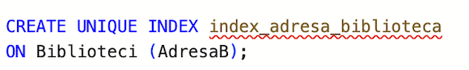
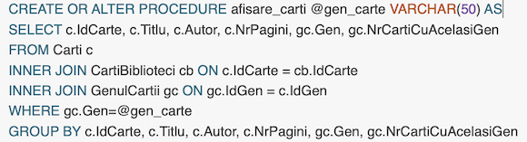
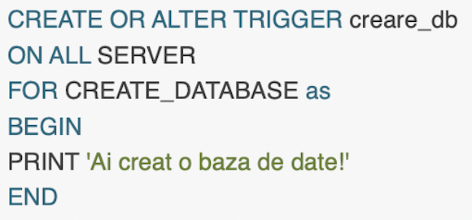
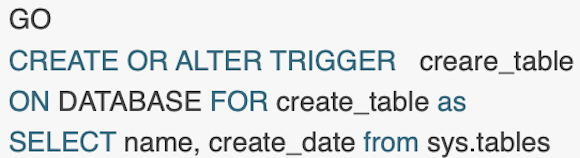

Lumea Cartilor
Specificatii
Odata cu dezvoltarea tehnologiei si datorita aparitiei calculatoarelor, oamenii tind sa nu mai respecte valorile si obiceiurile consacrate,cum ar fi: vizionarea unui film la cinematogaf,a unei piese de teatru sau a unui concert, preferand din comoditate,sa utilizeze calculatorul in scopul inlocuirii activitatilor pe care le-ar putea intreprinde.
Biblioteca reprezinta una din principalele surse de imbogatire spirituala si culturala pentru cei ce sunt interesati si pasionati de anumite domenii, sau poate fi si doar o simpla sursa de informatie pentru anumite persoane, care fortate de imprejurari ,sunt nevoite sa apeleze la serviciile unei biblioteci.
Activitatea intr-o biblioteca presupune o foarte buna organizare si administrare a tuturor elementelor sale ,cu scopul de a satisface cerintele clientilor intr-un timp cat mai scurt si in mod normal cat mai eficient.
Proiectul de fata, intitulat 'Lumea Cartiilor' reprezinta o baza de date pentru administarea unui lant de biblioteci din diferite orase cu diferite carti si cititori. Pentru administarera acesteia sunt necesare informatii despre persoanele care imprumuta carti din biblioteca, dar si despre cartile aflate in biblioteca.
Un cititor poate sa imprumute diferite carti in functie de genul preferat. Cartile sunt clasificate in functie de gen, categorile de varsta ale cititoriilor care le imprumuta
Pentru o gestionare mai usoara a cartilor imprumutate am decis ca ar trebui sa fac un tabel anume care sa contina id-ul carti imprumutate si id-ul cititorului care a imprumutat-o;
Structura bazei de date

Biblioteci - contine date despre o biblioteca.
CartiBiblioteci - reprezinta tabelul de legatura dintre o biblioteca si cartile sale.
AdministratorBiblioteca - contine date despre administratorul unui biblioteci.
Cititori - contine date despre abonatul biblioteci.
Carti - contine date despre cartile din biblioteca.
GenulCarti - reprezinta genul unei carti + numarul de carti cu acest gen.
CategoriDeVarsta - reprezinta categoriile de varsta pentru o anumita carte.
CititoriCartiImprumutate - contine nr de carti imprumutate pentru un anumit cititor.
CartiImprumutate - contine datele de imprumut pentru o anumita carte.
CititoriCategoriDeVarsta - tabel de legatura dintre un cititor si categoria de varsta.
GenulCartiImprumutate - tabel de legatura dintre o carte imprumutate si genul acesteia.
Relatii intre tabele
Intre tabela AdministatorBiblioteca si Biblioteci exista o relatie de 1-1 deoarece o biblioteca poate sa aibe un singur administrator.
Intre tabela Biblioteci si CartiBiblioteca exista o relatie de 1-n deoarece intr-o bibilioteca se pot afla mai multe carti.
Intre tabela CartiBiblioteci si Carti exista o relatie de 1-1, de fapt Carti reprezinta descrierea unei CartiBiblioteci.
Intre tabela Carti si GenulCartii exista tot o relatie de 1-1, deoarece o carte poate sa aibe un singur gen.
Intre tabela Cititori si CititoriCartiImprumutate exista o relatie de 1-n deoarece un cititor poate imprumuta mai multe carti.
Intre tabela CititoriCartiImprumutate si CartiImprumutate exista o relatie de 1-1, tabelul CartiImprumutate contine datele despre imprumut.
Constrangeri
- Printre constrangerile implementate se numara Primary keys (idBibilioteci, idCarte, idCategoriDeVarsta, etc) si Foreign keys , care fac legatura intre tabele si informatia sa fie coerenta. Am mai adaugat cateva chei primare compuse cum ar fi (IdCarteImprum,IdGen) pentru tabela GenulCartiImptrumutate.
- In cadrul tabelului de Carti, coloana ce contine titlu nu poate fi nula. Tot in cadrul acestui tabel la inserarea unei carti numarul de pagini ale acesteie trebuie sa fie mai mare de 20.
- La inserarea unui gen pentru o anumita carte, acesta trebuie sa fie Actiune/Dragoste/Fictiune/Mister/Istorie.
- Constrangeri de tipul in cazul unei inserari intr-un anumit tabel a unei coloane NULL, aceasta coloana sa ia defapt o valoare default data de mine.
Indecsi
-Am creat un unique index pentru tabela Biblioteci astfel incat coloana AdresaB sa nu contina valori duplicate => o singura biblioteca la o anumita adresa.

-Am creat un index pentru tabela Carti astfel incat coloana idGen sa contina valori duplicate => mai multi carti pot sa aibe acelasi gen.
-Am creat un index pentru tabela Carti astfel incat cartile sa fie ordonate in ordine crescatoare in functie de nr de serie.
-Totodata, la creearea tabelelor, cheile primare si straine reprezinta indecsi configurati automat in baza de date.
Vederi
1. Am creat o vedere in care sunt afisati cititorii care au carti imprumutate, varsta peste 10, si nr. de carti existente sub 12, avand ca si coloane : idul cititorului care a imprumutat cartea, varsta acestuia, idul carti imprumutate, numar de exemplare in care cartea este disponibila.
2. A doua vedere afiseaza genul cartilor care au fost imprumutate, daca nr. de carti cu acelasi gen este > 35 si nr. de pagini a unei carti este < 260, vederea are ca si coloane : idul genului , genul carti imprumutate, titlul carti, si numarul de pagini ale acesteia.
3. A patra vedere afiseaza id-ul cartilor care au genul Mister/Fictiune , avand ca si coloane : idul carti , genul carti imprumutate, titlul carti, numarul de pagini ale acesteia, autorul carti, numarul de carti cu acelasi gen.
4. A treia vedere afiseaza administratorii de biblioteca cu Experienta de peste 10 ani sau a caror Prenume incep cu litera A si e urmat de cel putin 2 caractere , avand ca si coloane : idul lui, numele, prenumele si experienta in ani
5. A treia vedere afiseaza administratorii de biblioteca cu Experienta mai mica de 15 si intervalul de functionare a biblioteci e respectat , avand ca si coloane : idul lui, numele, prenumele si experienta in ani , id-ul biblioteci la care lucreaza, orarul biblioteci.
Proceduri
1.Afiseaza toate cartile dintr-o biblioteca a carui adresa este data ca parametru.
2.Angajarea unui adminsitrator pentru biblioteca a carui adresa e data ca parametru, cu numele si prenume date ca parametru ,daca nu exista deja un angajat. Daca exista deja un administartor se returneaza un mesaj corespunzator.
3.Procedura care sterge cititori cu o varsta mai mica decat cea data ca parametru.
4.Afiseaza cartiile care au genul dat ca parametru .

Triggere DML
1.Atunci cand se sterge o carte din tabelul Carti se sterge cartea si din Tabela CartiBilioteci.
2.Afisare mesaj in cazul in care se creaza o noua Biblioteca cu un numar de citori mai mic sau egal cu 2.
3.Administratori cu o experienta mai mare de 5 ani sa nu poate fi concediati.
Triggere DDL
1.La stergerea tabelelor din baza de date curenta sa apara un mesaj de avertisment.
2.Sa fie interzisa modificarea tabelelor bazei de date curente.
3.La crearea unei baze de date se afiseaza un mesaj .

4.Cand se creeaza o tabela noua, se afiseaza toate tabelele din baza de date curenta.

5.Nu poti sa schimbi numele unui tabel.
Cursoare
1. Afiseaza cititori, datile in care au imprumutat respectiv returnat cartile, si nr de carti returnate.
2. Afiseaza primele 3 tabele din baza de date.
Job-uri
Inseram intr-o tabela noua toate cartile care au fost imprumutate in ziua curenta.
*Procedura
*Job-ul
Back-up
Utilizatori
Baza de date prezinta 3 tipuri de utilizatori cu roluri si drepturi diferite:
* Administrator - este administratorul bliblioteci avand rolul de db_owner deoarece este detinatorul acesteia, iar ca si drepturi poate sterge, adauga , actualiza, vizualiza datele despre biblioteca.
* Angajat - este un simplu angajat al bliblioteci avand rolul de db_reader, iar ca si drepturi poate sterge, adauga date despre biblioteca.
* Operator Backup - este angajatul care se ocupa de integritatea datelori avand rolul de db_backupoperator .